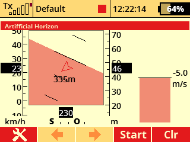

Umělý horizont

Popis
Aplikace zobrazí umělý horizont na hlavní obrazovce vysílače. Tato aplikace je užitečná při použití přijímačů Assist.
Založeno na kódu od uživatelů dandys a Marco Ricci.
Použití
-
V menu zvolte položku Aplikace - Uživatelské aplikace. Stisknutím klávsy F(3) otevřete dialog pro výběr aplikací. Zde vyberte soubor "Horizon".
-
Otevřete konfiguraci aplikace. Zde zvolte všechny senzory nezbytné pro správnou funkci aplikace.
- Roll sensor - senzor klonění je použit spolu se senzorem klopení k vykreslení orientace umělého horizontu na obrazovce.
- Pitch sensor - senzor klopení je použit spolu se senzorem klonění k vykreslení orientace umělého horizontu na obrazovce.
- Altitude sensor - výškový senzor je použit při vykreslování indikátoru výšky napravo od indikace horizontu.
- Vario sensor - senzor stoupání/klesání je vykreslen na pravé straně displeje.
- Speed sensor - senzor rychlosti slouží k zobrazení rychlostního indikátoru na levé straně od indikace horizontu.
- Heading sensor - senzor měření aktuálního kurzu je použit k vykreslení směru letu (vztaženo vzhledem ke světovým stranám).
- Distance sensor - senzor měření vzdálenosti, jež se zobrazí uprostřed grafiky umělého horizontu.
-
V menu zvolte nabídku Časovače/senzory - Údaje na hlavní obrazovce. Zde vytvořte novou položku a vyberte "Artificial Horizon" či "Umělý horizont" . Aplikace bude mít vlastní obrazovku na dipleji.
Zdrojové kódy můžete stáhnout z oficiálního repozitáře JETImodel Lua-Apps GitHub.